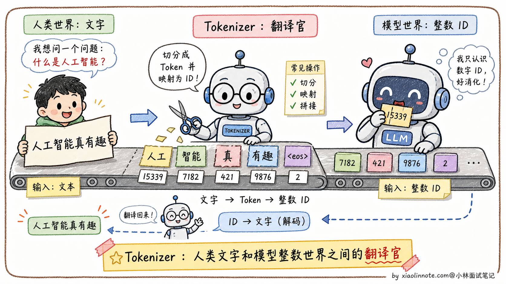
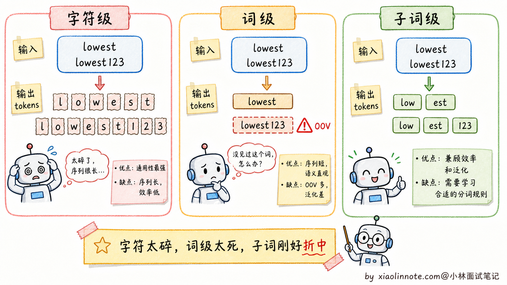
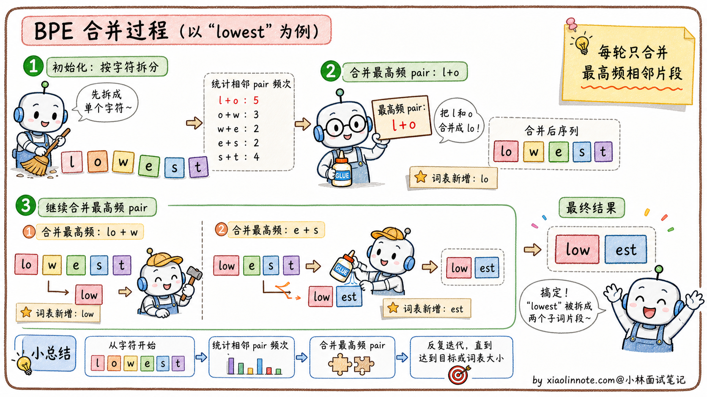
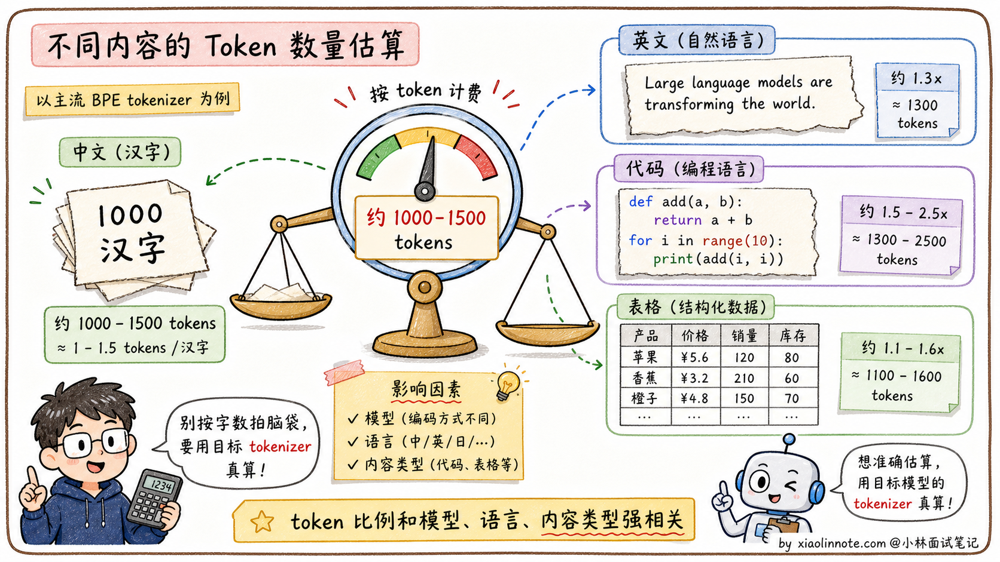

5. 什么是大模型项目的分词器？原理是什么？
👔面试官：来讲讲什么是大模型项目的分词器？原理是什么？
🙋♂️我：分词器就是把文本切成一个个词，让模型能处理。
👔面试官：……「切成词」是表面理解。模型为什么需要分词？直接用文本不行吗？再说，「词」具体是什么？是汉语里的一个字、一个词、还是别的什么？
🙋♂️我：哦哦，应该是因为模型只能处理数字，分词器把文字转成数字 ID 序列？
👔面试官：方向对了。那再问你：分词的粒度怎么选？按字符切（每个字一个 token）行不行？按单词切呢？为什么主流大模型都用 BPE 这种「子词级别」？
🙋♂️我：呃，按字符切应该会让序列太长，按单词切又会有 OOV 问题？
👔面试官：终于说到点子上。但 BPE 具体怎么工作的，你能说清楚吗？为什么中文 1000 字对应 1000-1500 个 token，而不是 1000 个或者 500 个？这种「实际工程数字」要心里有数，不然估算成本都估不准。回去搞清楚再来。
问到这里分词器这道题的全貌就出来了，它解决的远不止「切词」一件事：文本到整数的转换、字符级和词级之间的折中、新词怎么处理、特殊 token 怎么放，每一层背后都有具体的工程动机。
💡 简要回答
我觉得面试被问到 Tokenizer，最重要的是先说清楚「为什么需要它」，模型只能处理整数，不认识字符串，Tokenizer 就是把文字转成数字 ID 序列的桥梁。至于原理，主流路线都是子词分词，常见实现有 BPE、SentencePiece / Unigram、WordPiece 等。BPE 的直觉是从小单元出发，反复把出现频率最高的相邻片段合并成新 token，最终形成一个几万到十几万规模的词汇表，既能控制大小又能处理新词。实际开发里要注意的是：API 按 token 计费而不是按字数，1000 个汉字大概对应 1000-1500 个 token，但具体比例和模型 tokenizer 强相关，估算成本和上下文窗口用量都要用真实 tokenizer 来算。
📝 详细解析
为什么需要 Tokenizer
大语言模型的本质是一个函数：输入一串整数（token ID 序列），输出下一个整数的概率分布，然后把输出的整数再查表得到对应的文字。
整个过程里模型看到的全是整数，完全不认识字符串。Tokenizer 就是连接人类文字和模型整数世界的桥梁，做两件事：编码（文本 -> token ID 序列）和解码（token ID 序列 -> 文本）。

朴素方案的问题
要做分词，最直接能想到的两种方案都有致命缺陷。
第一种是字符级分词，每个字母或汉字算一个 token。这种方案词汇表很小（英文才 26 个字母加标点），但序列会变得非常长。一个简单的「hello」就变成 5 个 token，正常一篇文章能膨胀到几千上万个 token，让 Attention 机制的计算量（O(N²)）大幅飙升。而且字符本身携带的语义信息太少，模型要从一堆离散字符里重新学出「单词」的概念，效率极低。
第二种是词级分词，每个完整单词算一个 token。这种方式对英文这种有空格分隔的语言可以做到，但词汇表会膨胀到几十万甚至几百万，因为英文里光是「cat / cats / catting / catty」这种变形就要分别存。更严重的问题是 OOV（Out-of-Vocabulary，未登录词）：遇到训练时没见过的新词（专有名词、网络用语、拼写错误）就直接无法处理，模型只能输出一个「未知词」标记，相当于这个词的语义完全丢失。中文情况更糟，词级分词意味着要先做中文分词（哪些字组成一个词），分词错了下游全错。
字符级太碎，词级太散，子词分词就是这两者中间的甜蜜点。它做的是「subword（子词）」级别的分词，既控制了词汇表大小，又能处理新词，同时保留了比字符更多的语义信息。BPE 是最常见的一类，但不是唯一方案，很多模型也会用 SentencePiece / Unigram 或 WordPiece。

BPE 算法：从合并规则开始
BPE（Byte Pair Encoding，字节对编码）的原理其实很简单，分三步。
第一步，初始化：把训练语料里所有文本拆成最小单元（通常是单个字节或字符），每个字符就是一个基础 token，形成初始词汇表。
第二步，反复合并：统计语料中所有相邻 token pair 的出现频率，找到频率最高的那对，比如 「t」和「h」经常在一起，就把它们合并成新 token「th」，加入词汇表，同时更新语料中的所有「t」「h」相邻位置为「th」。然后继续找下一个最高频的 pair，比如「th」和「e」合并成「the」。每轮合并产生一条合并规则，同时词汇表增加一个新 token。
第三步，重复直到词汇表达到预设大小（比如 GPT-2 用了 50257，Llama 3 用了 128000）。
以「lowest」这个词为例，BPE 可能会把它分成「low」+「est」，因为「low」和「est」都是高频子词。遇到新词「lowest123」，BPE 会分成「low」+「est」+「1」+「2」+「3」，不会出现 OOV，每个部分都是有意义的 token。

中文分词的特点
中文没有空格分隔词语，BPE 面对中文的处理方式和英文不同。
在大多数主流模型的词汇表里，常用汉字会直接作为独立 token 存在（因为每个汉字出现频率足够高，不需要拆分）。常见的中文词语（比如「人工智能」）可能会被合并成单个 token，也可能是「人工」+「智能」两个 token，具体取决于训练数据里的频率。
实践中估算的经验规则是：1000 个汉字大约对应 1000-1500 个 token（汉字 token 化效率略低于英文，因为英文合并词会覆盖更多字符）。但这只是粗估，Qwen、Llama、OpenAI、Claude 的 tokenizer 都不一样，中文、英文、代码、表格混在一起时比例会明显变化，正式算成本前一定要用目标模型的 tokenizer 跑一遍。

特殊 Token 的作用
Tokenizer 里还有一些特殊 token，它们不是来自文本，而是用来给模型传递结构信息的。
BOS（Beginning of Sequence）标记序列开始；EOS（End of Sequence）标记序列结束，模型生成到 EOS 时停止输出；PAD（Padding）用于批量处理时对齐不同长度的序列；SEP（Separator）用于分隔不同部分（比如对话里区分系统消息和用户消息）；在 ChatML 格式里，<|im_start|> 和 <|im_end|> 这类特殊 token 用来区分对话轮次和角色。
模型对这些特殊 token 有特殊的「意识」，它们的 embedding 在训练中被专门优化，所以模型能根据这些信号理解对话的结构。了解了 Tokenizer 的原理，来看它在实际工程里会带来哪些具体影响。
为什么 Tokenizer 对实际工程很重要
理解 Tokenizer 不只是理论知识，对实际工程有几个特别直接的影响，搞不清楚就容易踩坑。
最直接的是API 成本估算。主流 LLM API 都是按 token 计费的，不是按字数。1000 汉字大约对应 1000-1500 tokens，1000 个英文单词大约 1300 tokens，代码的话效率更低（一些标点、缩进会单独成 token）。但这些都只是经验值，要预估费用，必须用目标模型的 tokenizer 数出来，不能只用字数拍脑袋。
第二个是上下文窗口管理。每个模型有最大 token 限制（比如 Claude 200K、Qwen 128K），你需要确保输入不超限。但字数和 token 数的比例取决于语言和内容类型，中文 + 代码混合内容很容易让你以为「才 5 万字应该不超」，实际算成 token 已经 8 万了。这种「直觉和实际不符」是新人的常见踩坑。
第三个是避免截断重要信息。如果你的文档恰好卡在上下文限制边缘，Tokenizer 可能会把一个词从中间硬切开（比如「人工智能」可能被截断成「人工」+ 半个「智」字），导致下游解析或检索失败。这种边界情况一定要在工程上处理，比如保留几百 token 的安全 buffer。
🎯 面试总结
回到开头那段对话，问到 Tokenizer，最重要的是先讲清楚「为什么需要它」。模型只能处理整数，不认识字符串，Tokenizer 就是连接人类文字和模型整数世界的桥梁。这一句铺垫先讲到，面试官就知道你抓到了本质。
接下来讲清三种分词粒度的取舍。字符级太碎（序列太长、语义信息少），词级太散（OOV 严重、词汇表爆炸），BPE 取了中间的子词级折中，既控制词汇表又能处理新词。这是子词分词的核心动机。
讲 BPE 原理时，把「初始化基础词汇表 → 反复合并最高频 pair → 直到词汇表达到预设大小」这个三步流程讲清楚就行。同时补一句：BPE 只是子词分词的一种，SentencePiece / Unigram、WordPiece 也很常见。能举一个「lowest123 被切成 low + est + 1 + 2 + 3，没有 OOV」的例子，比纯讲算法生动得多。
最关键的是带出实际工程影响：API 按 token 计费、1000 汉字 ≈ 1000-1500 tokens、上下文窗口管理、避免截断。这些都是面试官最爱听的「真的做过项目」的工程细节。
如果还想再加分，可以提一句特殊 token的作用（BOS、EOS、PAD、SEP，以及 ChatML 格式里的 <|im_start|>），让面试官知道你不只懂分词算法，还懂模型对话格式背后的工程细节。能讲到这一层，这道题就答得很完整了。
对了，大模型面试题会在「公众号@小林面试笔记题」持续更新，林友们赶紧关注起来，别错过最新干货哦！